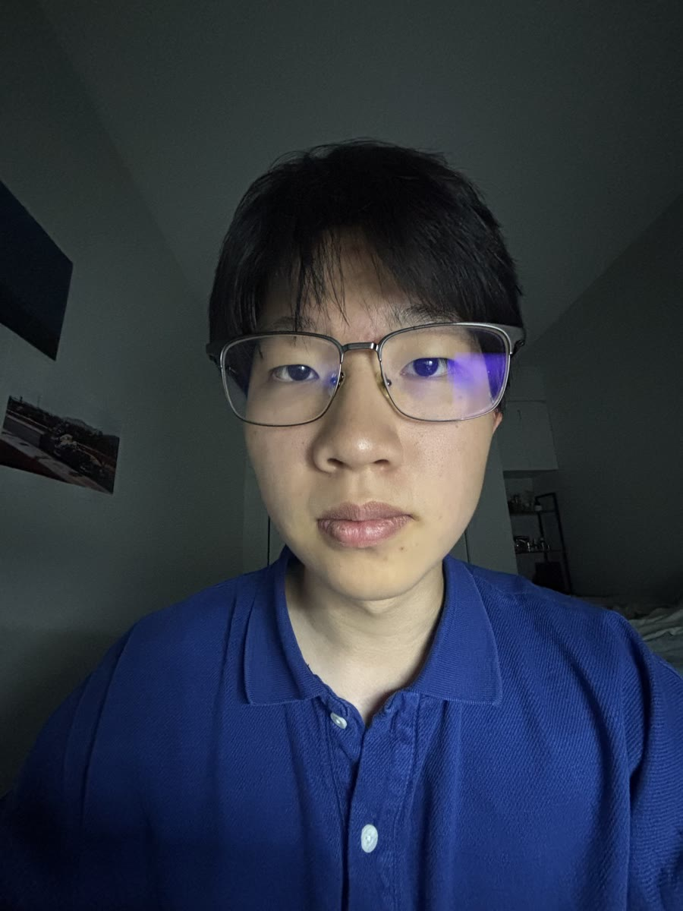
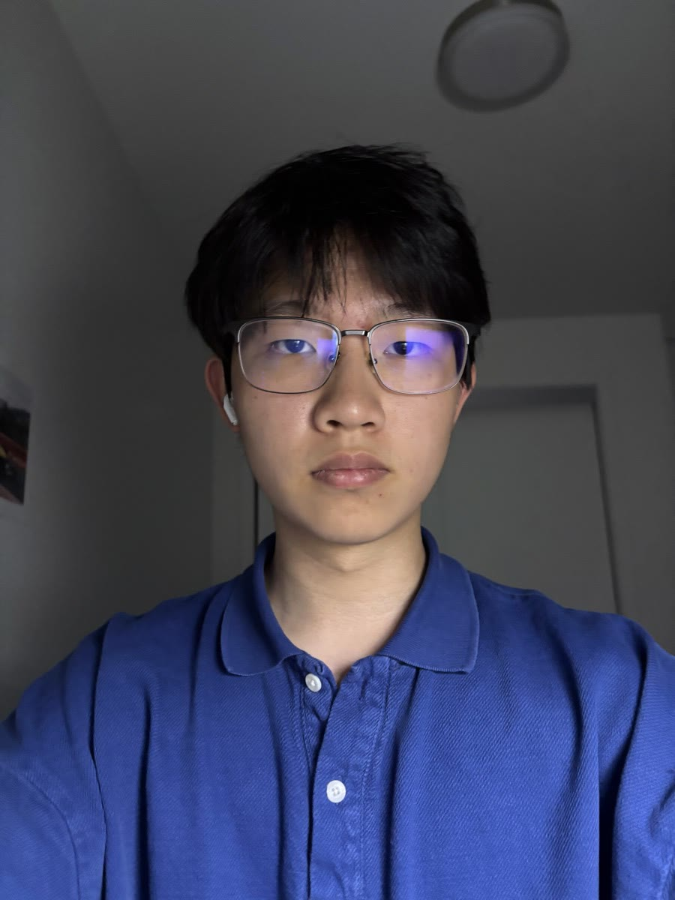
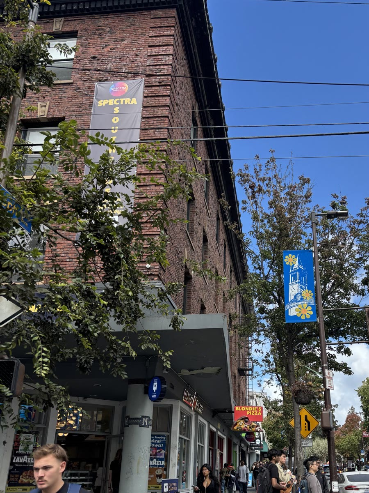
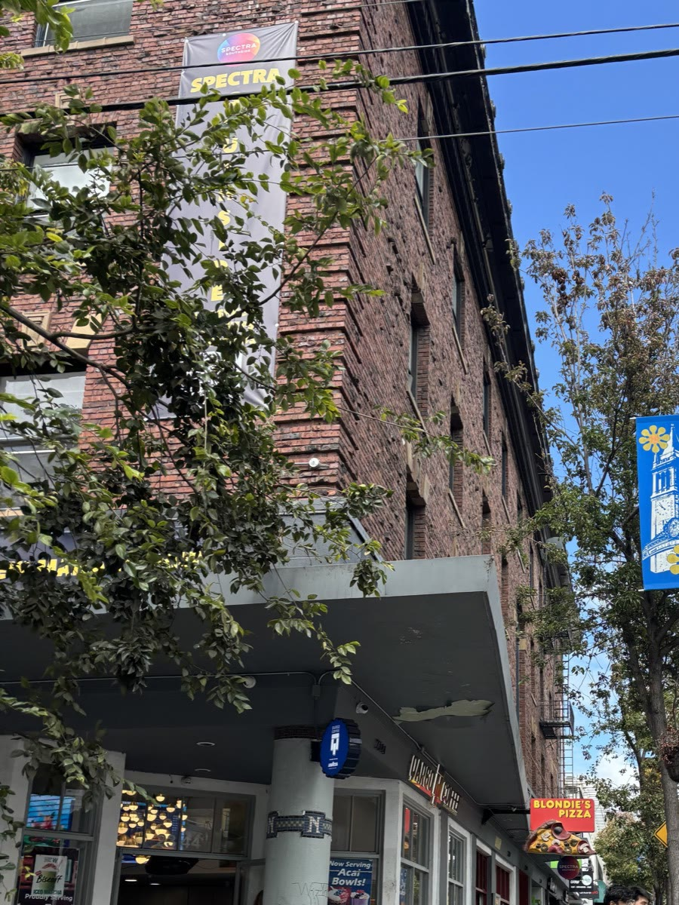
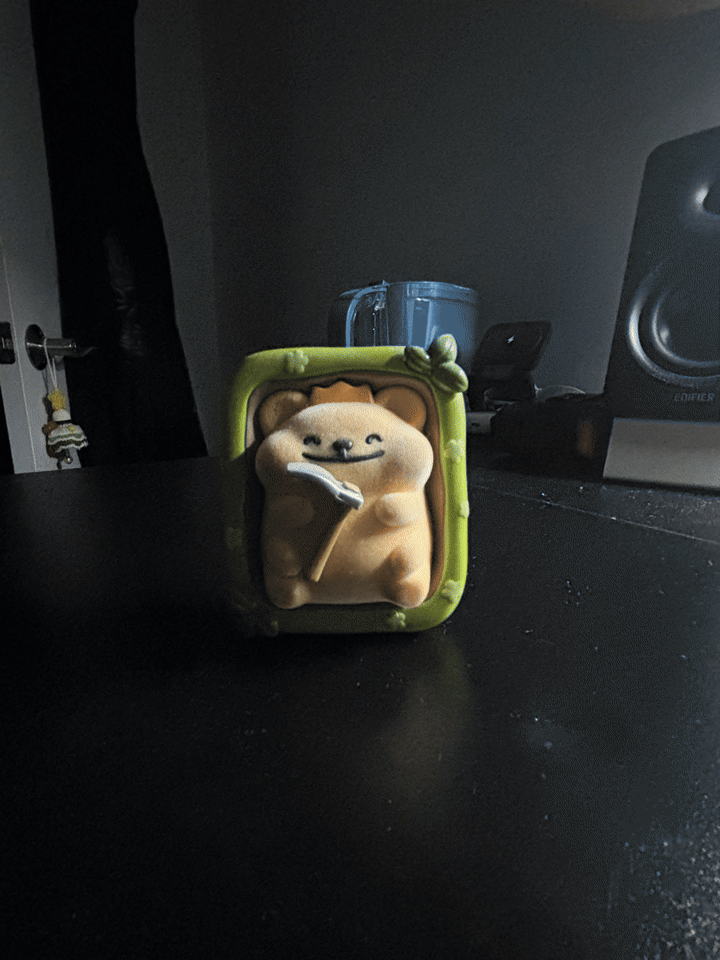

Project 0: Becoming Friends with Your Camera
Overview
This project explores how camera position and focal length change perspective.
Part 1: The Wrong Way vs. the Right Way
Moving the camera back and zooming in makes my face look flatter and more natural. This happens because the close camera exaggerates the features nearest to it, while the farther camera reduces those differences.


Part 2: Architectural Perspective Compression
Moving back and zooming in compresses the building, making its depth look less dramatic. Since I changed my position, the front and back of the building appear closer together in the zoomed photo.


Part 3: The Dolly Zoom
I moved the camera backward while zooming in to keep the subject nearly the same size.
